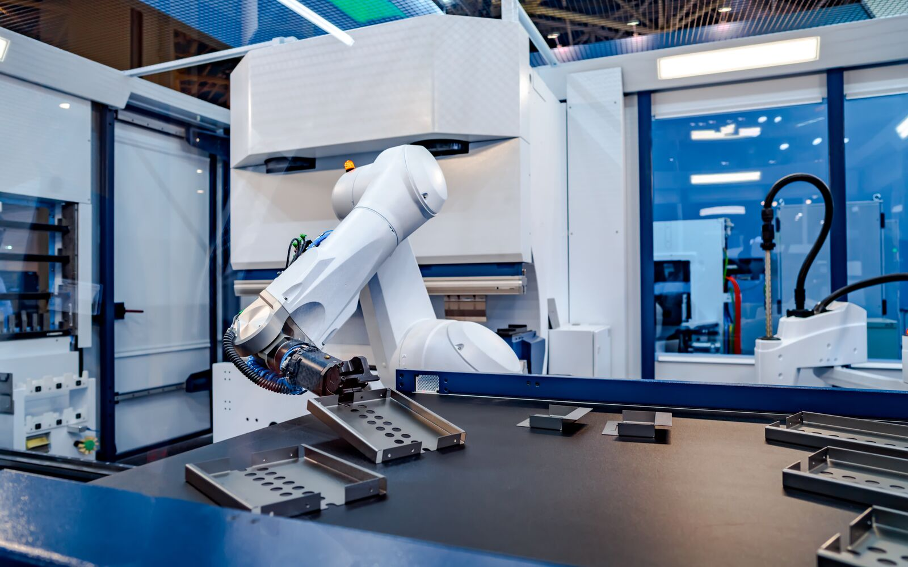
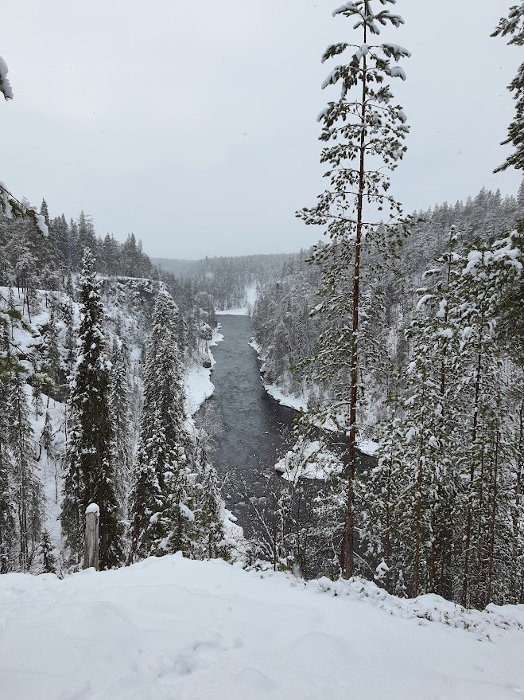

Currently, I'm an intern at Safran AI (ex.
Preligens) a company that's the world leader in AI for aerospace and defense. There, as a part
of the AI Factory team, I actively help to create tools to facilitate the production of AI
detectors.
Before my internship, I studied computer science and more specifically artificial intelligence for
6 years. During that time, I've been a part of a multitude of projects ranging from deep learning and
machine learning to software/web development. But I'm always looking to learn more. Especially in the
field of AI, which I have been fascinated by since my childhood.
I particularly enjoy the limitless potential of AI and the variety of applications that
are possible with it. As of now, I've mainly taken interest in fields such as computer vision
and machine learning but I'm always looking to learn more and would love to discover another field
or application such as AI-applied to robotics for example.

Lake Louise, Canada, October 2023

Lapland, Finland, April 2023
Computer science aside, I love traveling and discovering new cultures, this is one of the reasons I
moved to Canada last year, and I don't mind moving again for any opportunity! Wherever I travel, I
also enjoy going hiking, which is another one of my hobbies.
I'm also a big movie fan who appreciates movies of any genre (horror, musical, drama),
origin (Japan, India, U.S.A), or type (indie, classic, blockbuster). You can check out my interests
on my letterboxd account.